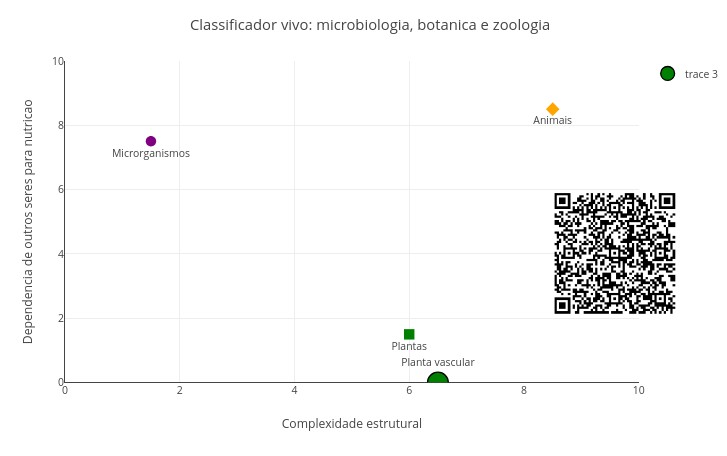
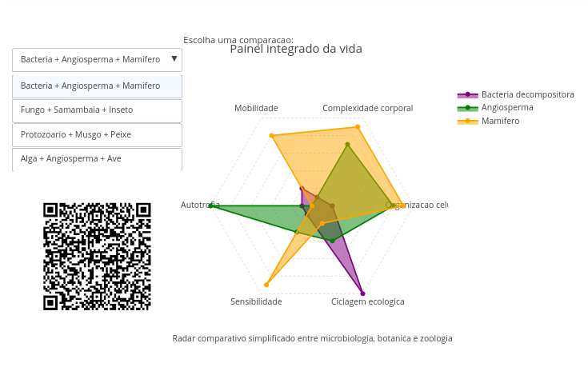
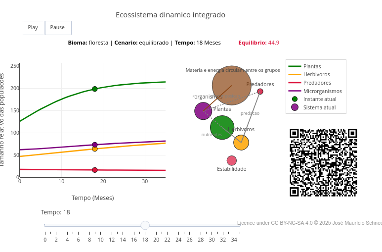

4 Vida em rede: Microbiologia, Botânica e Zoologia
É realmente bem fácil perceber animais e plantas ao seu redor. Eles ocupam o quintal, a praça, a horta, a mata, o aquário, a mesa de casa e até o próprio corpo humano, quando pensamos em alimentação, saúde e ambiente. Parte desses organismos são invisíveis por seu tamanho, os microrganismos, que habitam solos, água, ar, alimentos, animais, plantas e o ser humano.
Essa quantidade de seres vivos - entre micróbios, plantas e animais - define os campos de estudo da Microbiologia, Botânica e Zoologia, respectivamente. Microrganismos participam de processos que sustentam ou transformam os ecossistemas, decompondo a matéria e reciclando nutrientes. Plantas capturam energia luminosa e produzem biomassa. E animais interagem com plantas, com micróbios e com outros animais em teias complexas de alimentação, defesa, simbiose (interações) e equilíbrio ecológico, tal como já visto nesse *livro vivo*.
Mas esses grupos não existem de forma independente. O solo fértil depende da ação microbiana. A planta depende de água, minerais, luz e, muitas vezes, de interações com fungos e bactérias. O animal depende direta ou indiretamente das plantas, e também convive com comunidades microbianas internas e externas.
Embora sejam áreas distintas e que costumam aparecer separadas, o mundo não faz distinção entre elas. Estudar esses três ramos em conjunto permite perceber padrões que atravessam toda a vida, como organização celular, nutrição, reprodução, adaptação, trocas com o ambiente, relações ecológicas e diversidade de formas. A proposta deste capítulo é integrar os ramos da Microbiologia, Botânica e Zoologia para enxergar conexões e compreender a vida como uma rede.

célula integra um organismo, que faz parte de uma população, a qual se insere em ecossistemas que compõem a biosfera.
Depois de explorar, você consegue:
- reconhecer diferenças e aproximações entre microrganismos, plantas e animais;
- comparar formas de organização corporal e modos de vida;
- relacionar nutrição, respiração, reprodução e adaptação em diferentes grupos;
- interpretar o papel ecológico de bactérias, fungos, vegetais e animais;
- explorar modelos computacionais interativos que conectam os três ramos da BiologiaComo explicado acima, a ideia aqui não é classificar todos os organismos com precisão taxonômica, mas criar um mapa para perceber como microrganismos, plantas e animais podem ocupar posições diferentes numa rede viva. Para iniciar o capítulo nessa direção, um JSPlotly criado como um “classificador vivo” simples.

Agite antes de usar
O script compara diferentes grupos de seres vivos por complexidade estrutural, autotrofia, mobilidade e papel ecológico.
Altere os valores iniciais do código:
const grupo = "Planta vascular";
const complexidade = 6.5;
const autotrofia = 1.0;
const mobilidade = 0.0;
const papel_ecologico = "produtor";A variável complexidade indica o grau de organização estrutural. A variável autotrofia indica o quanto o organismo produz seu próprio alimento. A variável mobilidade altera o tamanho do marcador no gráfico. E o papel_ecologico, que estabelece a posição que um organismo ocupa em uma cadeia alimentar, é definido pela cor do ponto:
if (papel === "produtor") return "green";
if (papel === "consumidor") return "orange";
if (papel === "decompositor") return "brown";Por tratar-se de algoritmos, a grafia dos termos usados omite intensionalmente as acentuações, posto que linguagens de programação não a compreendem.
O eixo horizontal representa a complexidade estrutural, enquanto que o vertical a dependência de outros seres para nutrição.
Essa dependência é calculada assim:
const dependencia = 10 - autotrofia * 10;Desse modo, quanto maior a autotrofia, menor a dependência trófica. Por isso, plantas tendem a aparecer mais abaixo no gráfico, enquanto animais, que dependem de outros seres para obter matéria orgânica, aparecem mais acima. Agora você pode explorar alguns cenários.
- Bactéria decompositora. Decompositores podem ter baixa complexidade estrutural, embora exerçam papel ecológico gigantesco, reciclando a matéria.
const grupo = "Bacteria decompositora";
const complexidade = 1.2;
const autotrofia = 0.1;
const mobilidade = 0.3;
const papel_ecologico = "decompositor";- Planta vascular. Plantas podem ter alta complexidade e baixa mobilidade, mas sustentam redes alimentares pela produção de matéria orgânica.
const grupo = "Planta vascular";
const complexidade = 6.5;
const autotrofia = 1.0;
const mobilidade = 0.0;
const papel_ecologico = "produtor";- Animal vertebrado. Animais tendem a apresentar alta mobilidade e alta dependência trófica, pois precisam obter alimento de outros organismos.
const grupo = "Animal vertebrado";
const complexidade = 8.5;
const autotrofia = 0.0;
const mobilidade = 1.0;
const papel_ecologico = "consumidor";- Fungo decompositor. Fungos mostram que baixa mobilidade não significa pouca importância ecológica.
const grupo = "Fungo decompositor";
const complexidade = 4.5;
const autotrofia = 0.0;
const mobilidade = 0.1;
const papel_ecologico = "decompositor";Usando o app, você consegue perceber que cada grupo, microorganismo, planta ou animal, pode ser compreendido por sua organização, forma de nutrição, mobilidade e função ecológica. Plantas produzem matéria orgânica, enquanto animais consomem e se deslocam, e microrganismos e fungos reciclam matéria. E todos participam de uma rede de relações.
Ao comparar formas de vida, você pode listar nomes ou grupos taxonômicos. Mas talvez seja mais produtivo observar dimensões comparáveis entre eles, como a organização celular, presença de tecidos, mobilidade, nutrição, reprodução, interação com o ambiente e função ecológica.
Microrganismos mostram que a vida pode ser extremamente eficiente, mesmo sem grande complexidade corporal, enquanto as plantas mostram como a fixação ao substrato ocorre com uma boa dose de sofisticação fisiológica. Já os animais mostram como mobilidade, sensibilidade e integração ao ambiente abrem portas para outras possibilidades adaptativas.
Para ilustrar essas relações, segue mais um app. No primeiro script de JSPlotly, comparamos seres vivos por sua complexidade, mobilidade, modo de nutrição e papel ecológico. Agora vamos utilizar um radar comparativo entre grupos de seres vivos. Esse radar (ou diagrama de teia) é um gráfico usado para comparar alguns elementos usando três ou mais variáveis.

O app compara diversos grupos como bactéria, protozoário, fungo, alga, musgo, samambaia, angiosperma, inseto, peixe, ave e mamífero. Para isso, ele utiliza seis dimensões: organização celular, complexidade corporal, mobilidade, autotrofia, sensibilidade e ciclagem ecológica.
Agite antes de usar
Você pode comparar os diferentes grupos de seres vivos por meio do painel em forma do radar simplificado da Figura 4.3. Cada eixo representa uma dimensão biológica:
- organização celular;
- complexidade corporal;
- mobilidade;
- autotrofia;
- sensibilidade;
- ciclagem ecológica.
Use o menu suspenso para alternar entre diferentes combinações de organismos. O objetivo não é produzir uma classificação taxonômica rigorosa, mas perceber como microbiologia, botânica e zoologia podem ser comparadas a partir de características funcionais.
Por exemplo, a combinação inicial compara:
const gruposIniciais = ["bacteria", "angiosperma", "mamifero"];Ela coloca lado a lado uma bactéria decompositora, uma planta com flor e um mamífero. O banco de dados interno do script contém os perfis de cada grupo. Por exemplo:
bacteria: {
nome: "Bacteria decompositora",
valores: [2, 1, 2, 1, 1, 10]
}Esses valores correspondem, na ordem, às dimensões do radar:
const dimensoes = [
"Organizacao celular",
"Complexidade corporal",
"Mobilidade",
"Autotrofia",
"Sensibilidade",
"Ciclagem ecologica"
];Assim, a bactéria aparece com baixa complexidade corporal, mas com alto papel na ciclagem ecológica. Já uma angiosperma aparece com alta autotrofia e boa complexidade estrutural:
angiosperma: {
nome: "Angiosperma",
valores: [8, 7, 0, 10, 3, 4]
}E um mamífero aparece com alta complexidade, mobilidade e sensibilidade, mas baixa autotrofia:
mamifero: {
nome: "Mamifero",
valores: [9, 9, 8, 0, 9, 2]
}Alguns cenários interessantes são propostos para auxiliar seu aprendizado.
Bactéria + angiosperma + mamífero. Compare três grandes modos de vida: decomposição, produção e consumo. A bactéria se destaca na ciclagem ecológica, a angiosperma na autotrofia, e o mamífero na mobilidade e sensibilidade.
Fungo + samambaia + inseto. Observe como um decompositor, uma planta vascular sem sementes e um animal invertebrado ocupam perfis ecológicos diferentes. O fungo contribui fortemente para reciclagem, a samambaia para produção, e o inseto para mobilidade e interação.
Protozoário + musgo + peixe. Essa comparação ajuda a perceber que organismos aquáticos, simples ou complexos, podem ter estratégias muito diferentes de nutrição, locomoção e sensibilidade.
Alga + angiosperma + ave. Aqui aparecem dois produtores fotossintetizantes, em níveis diferentes de complexidade, e comparados a um animal altamente móvel.
O radar mostra que nenhum grupo é “melhor” em tudo. Cada forma de vida ocupa um perfil próprio, com forças e limitações. Assim, o script ajuda a mostrar que obter energia, manter organização, interagir com o ambiente, perceber estímulos e participar da ciclagem da matéria, são papeis desempenhados pela “equipe” toda da microbiologia, botânica e zoologia e, mais do que nomes de grupos, constituem elementos conectados por funções e relações ecológicas.
As ideias desse capítulo aparecem o tempo todo no mundo, mesmo quando não as percebemos. Em um jardim, em uma floresta, numa plantação, num lago ou no intestino humano, a vida é sempre coletiva. Microrganismos participam da decomposição do lixo orgânico, da produção de alimentos fermentados, da digestão e até da reciclagem de nutrientes no solo.
Plantas sustentam cadeias alimentares, regulam ciclos biogeoquímicos e transformam energia luminosa em matéria orgânica. Animais redistribuem energia, interagem em cadeias tróficas e modificam ecossistemas continuamente. Desse modo, plantas, animais e microrganismos se cruzam em trocas permanentes. Retirar um desses componentes do quadro não apenas empobrece a paisagem, mas altera ciclos, relações tróficas, decomposição, fertilidade, produtividade e saúde.
Todos os organismos dependem de células organizadas, metabolismo, troca de matéria e interação ecológica. Quando um alimento estraga, quando uma floresta cresce, quando um lago sofre contaminação ou quando uma população desaparece, estamos observando relações biológicas em rede, e não em partes isoladas.
Dessa forma, conclui-se também que microrganismos, plantas e animais formam sistemas conectados por fluxo de energia, circulação de nutrientes, relações ecológicas, equilíbrio ambiental, e transformação contínua da matéria. Os dois primeiros apps do capítulo evidenciam que organismos possuem funções ecológicas organizadas pelas próprias células. Mas, e o que dizer sobre o que conecta todos os grupos vivos em uma dinâmica comum nos ecossistemas ?
Esse é o assunto do próximo JSPlotly, um app literalmente “mais animadinho” !

Agite antes de usar
O script integra Microbiologia, Botânica e Zoologia em um mesmo sistema dinâmico. Plantas, herbívoros, predadores e microrganismos mudam juntos ao longo do tempo, formando uma rede ecológica interdependente. O gráfico agora constitui uma animação no tempo, mostrando como as populações variam. Já o painel ecológico instantâneo representa visualmente as relações entre os grupos.
Altere principalmente:
const bioma = "floresta";
const cenario = "equilibrado";Para a primeira variável, bioma, você pode experimentar “floresta”, “campo",”lago“, e”cerrado“. Já para segunda variável, cenario, você pode tentar”seca“, contaminacao”, e “recuperacao”.
Depois utilize os widgets da área gráfica (ajustes interativos), como a barra deslizante de tempo (slider), os botões Play/Pause, e as intensidades ambientais.
Observe que as populações não mudam isoladamente. Quando plantas diminuem, herbívoros podem sofrer redução. Quando decompositores aumentam, nutrientes retornam ao sistema. Quando a contaminação cresce, vários grupos podem ser afetados ao mesmo tempo. Esse modelo computacional simplificado trabalha com algumas ideias presentes em interações ecológicas, como produtores, consumidores, predadores, decompositores, detritos, e estabilidade ecológica.
No modelo, o crescimento das plantas, por exemplo, depende de clima, do suporte ambiental e da competição, e é inserido nesta parte do código:
const crescimentoPlantas =
cfg.prodBase *
clima *
f.impactoPlantas *
P *
(1 - P / cfg.suportePlantas);Já os decompositores ajudam a devolver nutrientes ao sistema:
const retornoNutrientes =
0.032 * D * (M / (M + 25)) + 7 * rec;Seguem alguns cenários para você experimentar.
- Floresta equilibrada. Ecossistemas equilibrados apresentam oscilações, mas conseguem manter estabilidade relativa ao longo do tempo.
const bioma = "floresta";
const cenario = "equilibrado";- Seca. Mudanças climáticas podem reduzir produtores e afetar toda a cadeia ecológica.
const bioma = "cerrado";
const cenario = "seca";
3. *Contaminação*.
```js
const bioma = "lago";
const cenario = "contaminacao";- Recuperação ambiental. Ecossistemas possuem capacidade de regeneração, especialmente quando processos ecológicos são restaurados.
const bioma = "campo";
const cenario = "recuperacao";- Reforço microbiano. Decompositores podem acelerar reciclagem de nutrientes e favorecer recuperação do sistema.
const reforcoMicrobiano = 20;Veja que os ecossistemas funcionam como redes dinâmicas. Plantas produzem matéria orgânica (capturam energia) que é consumida por herbívoros (redistribuem energia). Predadores regulam populações, enquanto decompositores reciclam matéria e devolvem nutrientes ao ambiente, resultando em equilíbrio ecológico.
Agora é aquele momento para assimilar o conteúdo e deixar o pensamento sair do corpo !
- E se os decompositores desaparecessem de um ecossistema ?
- E se houver decompositores abundantes, mas poucos produtores ?
- E se plantas perdessem a capacidade de fotossíntese ?
- E se organismos extremamente simples dominassem um ambiente inteiro ?
- E se uma cadeia alimentar perdesse seus predadores ?
- E se aumentássemos drasticamente a contaminação ambiental ?
- E se o número de herbívoros crescesse muito rapidamente ?
- E se um ecossistema tivesse alta biodiversidade, mas baixa estabilidade ?
- E se toda a produção de matéria orgânica dependesse apenas de microrganismos ?
- E se um ambiente tivesse produtores, mas quase nenhum decompositor ?
- E se um organismo tivesse alta complexidade estrutural, mas baixa integração ecológica ?
- E se microrganismos simbióticos desaparecerem de plantas ou animais ?
- E se uma população animal crescer muito acima da capacidade do ambiente ?
- E se um pequeno desequilíbrio ecológico se propagasse por toda a rede viva ?
- E se organismos muito diferentes ocupassem papéis ecológicos semelhantes ?
- E se um ecossistema inteiro dependesse de apenas uma espécie dominante ?
Os padrões mostrados nesse capítulo aparecem em muitos contextos reais, já que o planeta Terra abriga “uma célula em cada esquina”. Assim é para a ação de microrganismos na produção de alimentos durante a fermentação, ou de decompositores reciclando a matéria orgânica na compostagem.
Ou para a microbiota humana, nome que se dá ao conjunto de microrganismos integrado ao metabolismo do nosso corpo (antigamente chamado de “microflora”), e que, pasme, é quase três vezes maior em número do que nossas próprias células somáticas !! E o que dizer da intervenção humana danosa sobre diversos biomas, como o desmatamento que promove alterações drásticas nas relações ecológicas, ou as queimadas, que impactam simultaneamente a flora, a fauna, e a microbiota dos solos.
Os scripts desse capítulo não pretendem reproduzir a complexidade taxonômica da Biologia. Muito longe disso, seu papel é oferecer um modelo comparativo, manipulável e visual. Ao mudar poucas variáveis, você percebe que conceitos biológicos podem ser traduzidos em parâmetros, relações e padrões. Essa passagem entre a linguagem da Biologia e a linguagem computacional pode ajudá-lo a desenvolver um raciocínio analítico temperado com pensamento computacional por modelagem e leitura crítica de simplificações.
Por falar em modelagem computacional, que tal aprender um pouco como funciona o script da Figura 4.3 pelo pseudocódigo abaixo ?
INICIAR banco de organismos
armazenar diferentes grupos vivos:
bactérias
fungos
algas
plantas
animais
definir valores para:
organização celular
complexidade corporal
mobilidade
autotrofia
sensibilidade
ciclagem ecológica
CRIAR lista de dimensões biológicas
GERAR estrutura do radar
criar ângulos igualmente distribuídos
associar cada dimensão a um eixo
PARA cada organismo selecionado
obter valores biológicos
converter valores em coordenadas x e y
fechar polígono do radar
criar gráfico do organismo:
linhas
marcadores
preenchimento interno
FIM
CRIAR grade de referência
desenhar círculos concêntricos
indicar níveis de intensidade
CRIAR rótulos das dimensões
posicionar textos ao redor do radar
CONFIGURAR menu interativo
permitir troca entre conjuntos de organismos
ATUALIZAR gráfico
mostrar organismos selecionados
atualizar título comparativo
CONFIGURAR layout final
esconder eixos cartesianos
manter proporção circular
adicionar legenda e instruções
RETORNAR
dados do radar
layout do gráfico